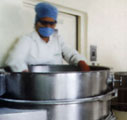
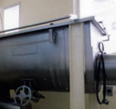
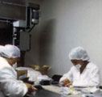

Quienes somos
Historia
Fundada en 1976, somos una empresa 100% mexicana, dedicada a la elaboración de productos naturistas de alta calidad, de acuerdo a las necesidades del mercado y de nuestros clientes.
Contamos con la autorización sanitaria en los siguientes campos:
{kind=link}
- Laboratorio Farmacéutico
- Laboratorio de Productos Naturales
- Laboratorio de Remedios Herbolarios
Medicamentos Alópatas Humanos y Veterinarios
Suplementos Alimenticios
Productos Tradicionales
{kind=link}
Misión Satisfacer las necesidades de nuestros clientes creando productos de alta calidad brindado salud y nutrición a las necesidades del ser humano.
{kind=link}
Calidad, liderazgo, alta dirección, planeación estratégica y puntualidad. Inspirados en nuestra más importante meta, la salud de las personas.
Elaboramos Principalmente:
{kind=link}
- Maquila de formas farmacéuticas sólidas: llenado de cápsulas, tableteado, grageado, microencapsulado y recubrimientos (film coating).
- Línea propia de productos naturales en diversas presentaciones (Nopal, Alga Spirulina, Sen, Ajo, Shiitake, etc.).
- Materias Primas: cápsulas de gelatina dura, micropac (excipiente ideal para compresión directa de tabletas), entre otros.
- Desarrollo de nuevos productos para el mercado nacional y de exportación.
Ing. Pedro Tomás Martín:
Director General{kind=link}
Graduado en la primera generación de Ingeniría Bioquímica en 1962, trabajó en empresas como: Elli Lilly and CIA, Bristol Myers México y COSBEL ( LÓREAL of Paris, LANCOME), entre otros.